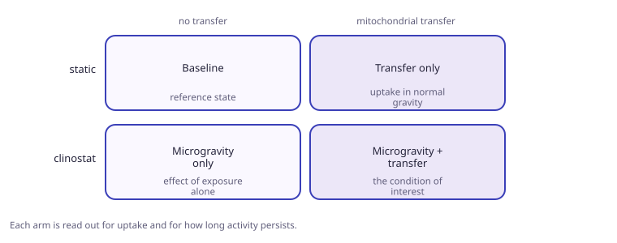
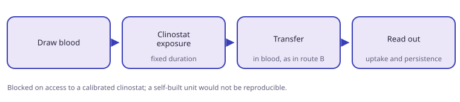

A variation of the neutrophil experiment in which blood is exposed to simulated microgravity before transfer. The design is fixed. The work is blocked on access to a calibrated clinostat.
Objective
- Test whether exposure to simulated microgravity changes mitochondrial uptake or how long activity persists.
- Keep every other variable identical to the neutrophil experiment.
Design
- Two factors: gravity condition and transfer.
- Four arms, each read out for uptake and for persistence of activity.

Protocol order
- Draw blood.
- Expose to simulated microgravity in a clinostat for a fixed duration.
- Perform the transfer in blood, following the in-blood route.
- Read out uptake and persistence.

Blocker
- Requires a calibrated clinostat. A self-built unit would not make the experiment reproducible by other labs.
- Microgravity is also queued as a dataset in the disease comparison work, so the wet-lab and computational sides can eventually be compared.